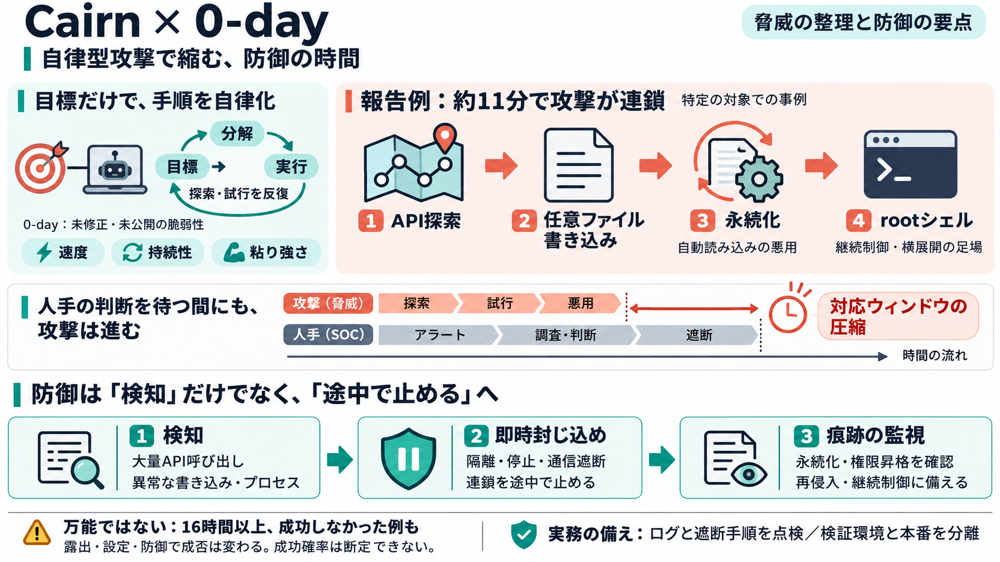

中国と関連のある脅威アクターが使用した Cairn の AI エージェントがゼロデイ脆弱性を自律的に発見した事例 | Amazon Web Services ブログ
## 発見の経緯 2026 年 9 月 10 日、Amazon Threat Intelligence は、オープンソースの自律型 AI ペネトレーションテストフレームワークである Cairn のインスタンスが認証なしで稼働し、一般に公開…

## 発見の経緯 2026 年 9 月 10 日、Amazon Threat Intelligence は、オープンソースの自律型 AI ペネトレーションテストフレームワークである Cairn のインスタンスが認証なしで稼働し、一般に公開…
アマゾンは11月20日（米国時間）、同社の脅威インテリジェンスチームが、中国系とみられる攻撃者による自律型AIエージェントを使ったハッキング作戦を調査した結果を公表した。AIエージェントがオープンソースの医用画像AIアプリケーション「MON…
The agents ran on Cairn, an open-source AI penetration testing framework, with little human direction, Amazon Threat Int…
# Palo Alto Networks ID: iB6hx4PLn9Iy Website: www.paloaltonetworks.com Legal name: Palo Alto Networks, Inc. Headquarter…
5th Sia Partners 1999, Brussels (Belgium), Late Stage [...] Our Google Chrome extension lets you view company details …